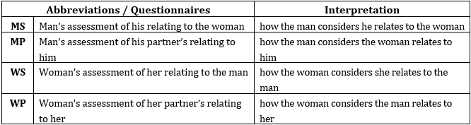

Healthy relationships are beneficial in every person's life, such as contributing to their physical and mental health, personal, family, professional, and social well-being, and quality of life. Therefore, identifying potential difficulties in your interpersonal relationships is of utmost importance as it will be the starting point to work on and improve these difficulties. Remember that the world's longest longitudinal study on happiness, which started in 1938 at Harvard University, concluded that "good relationships make us happy and healthy" (Waldinger & Schulz, 2023).
The Person’s Relating to Others Questionnaire (PROQ3) is designed to explore various negative emotions and attitudes people may have towards others. It is based on Relating Theory, which represents dysfunctional relationships in eight dimensions and visualizes them using an octagon. Each section of the octagon corresponds to a different relational pattern. The darker a section, the more negative the relationships it represents.
Results are presented in two formats:
The Couple’s Relating to Each Other Questionnaire (CROQ3) is designed to explore various negative emotions and attitudes people may have towards their partner. It is based on Relating Theory, which evaluates dysfunctional relationships between partners using eight dimensions of relating. Dysfunctional relationships are also represented graphically through four octagons, where each section reflects one of the eight relational patterns. Specifically, each section of the octagon corresponds to a unique way of relating.
The four octagons are derived as the CROQ3 evaluates how each partner relates to their partner (Self-Assessment) and how each partner perceives their partner relates to them (Partner Assessment).
The results are presented in two ways: (a) Numerically, with scores for the eight (8) dimensions/types of relating (represented by the eight corresponding sections of the Octagon) for each of the four (4) octagons. (b) Graphically, with a diagram of four (4) octagons, where shaded sections represent the positions/sections of the Octagon that exhibit negative or dysfunctional relationships. The darker the section of the Octagon, the more negative the relationships represented by that position.
The results are presented in two ways: (a) numerically, with scores for the eight (8) dimensions (depicted in eight corresponding octants of the Octagon) for each of the four (4) octagons; and (b) graphically, with a diagram of four (4) octagons, which depicts as shaded areas the octants of the octagons where negative - dysfunctional relationships are observed. The more shaded area on the Octagon, the more dysfunctional the relating on that particular dimension.